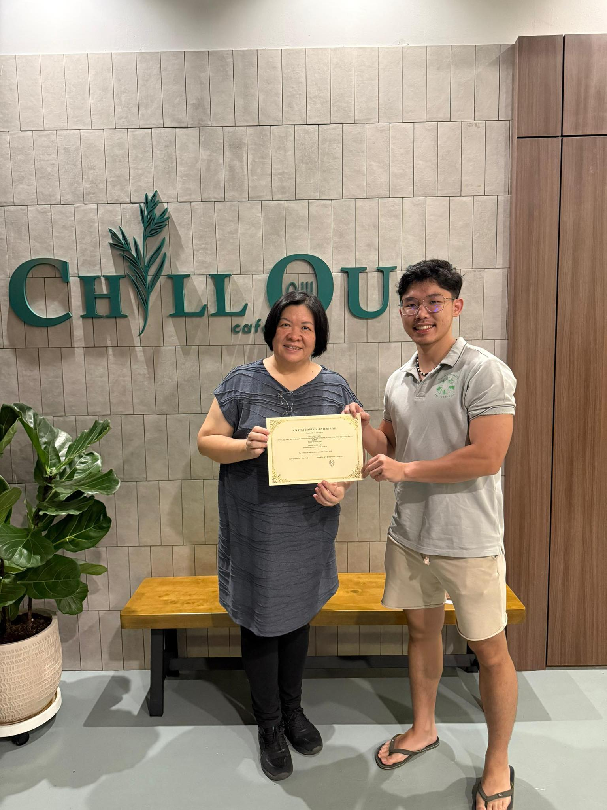
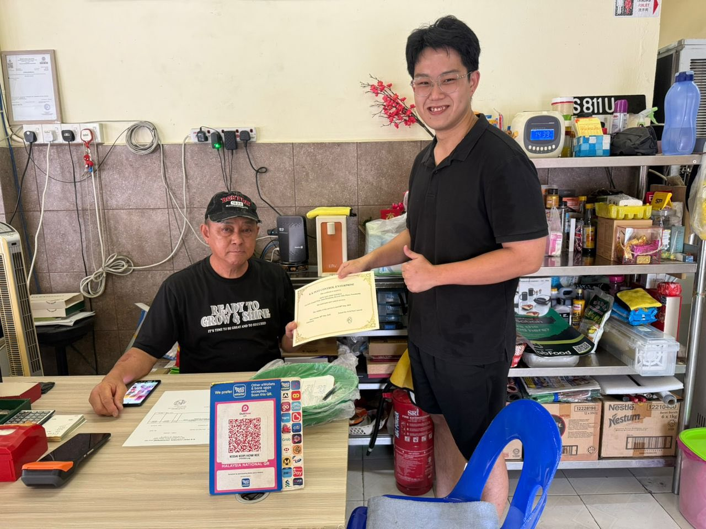
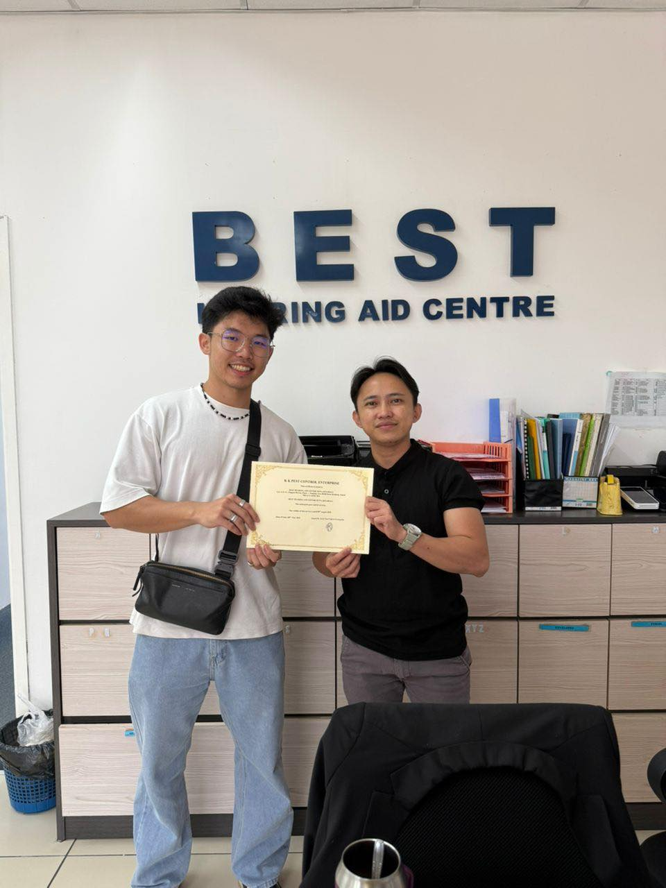

See how we've helped thousands of clients across Sabah since 1991. Real results, real testimonials.

Location: Lintas | Date: May 2025
Successfully eliminated a severe termite infestation in a 3-story commercial building. Used advanced baiting systems and soil treatment to protect the entire structure. Client reported no termite activity after 6-month follow-up.
✓ Treatment: Sentricon Baiting System + Soil Barrier | Duration: 2 days

Location: Bundusan | Date: May 2025
Complete pest management program for a busy restaurant facing cockroach and fly issues. Implemented monthly maintenance schedule with gel baiting, residual spraying, and hygiene protocols. Restaurant passed health inspection with flying colors.
✓ Treatment: Gel Baiting + ULV Fogging + Monthly Monitoring | Ongoing Contract

Location: Tanjung Aru | Date: May 2025
Centre experiencing persistent rat problems for over 6 months. Our team identified 12 entry points, sealed them all, and set up monitoring traps. Zero rat activity within 2 weeks. Customer extremely satisfied with humane approach.
✓ Treatment: Entry Point Sealing + Snap Traps + Weekly Monitoring | Completed